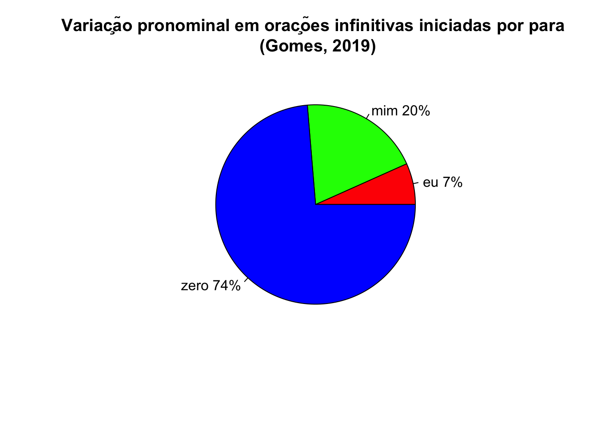

Gramática Viva ao Vivo

O ciclo de oficinas Gramática Viva ao Vivo no Webinário do Profletras foi uma das experiências mais enriquecedoras das quais tive a oportunidade de participar. Foram cinco encontros, dos quais participei do terceiro, o do eixo Gramática e variação linguística, e do quinto, que foi um balanço final com todas as participantes.
Os vídeos dos encontros estão disponíveis no canal do Profletras Nacional no YouTube.
Aqui resumo minha exposição no eixo Gramática e variação linguística.
Vivemos tempos de intolerância. Ações extremistas, discriminação, discursos de ódio, cultura do cancelamento. A sociedade está doente. Onde nós erramos? É papel da escola formar para a cidadania. E tudo que está acontecendo é o contrário do que esperamos. Eu quero falar um pouco da nossa responsabilidade em tudo isso. E variação linguística é um bom ponto de partida.
Falamos muito de variação linguística, mas nem sempre temos clareza sobre ela. Variação linguística na escola muitas vezes se resume a aipim, mandioca e macaxeira. Na sociedade, falamos muito de sotaques. Perceber a variação no nível fonológico é mais fácil do que perceber nos níveis gramaticais mais altos. Precisamos superar as limitações na abordagem pedagógica da variação linguística, precisamos reconhecer que existe variação além da fonologia, que existe variação na gramática, e que está, inclusive, na gramática normativa). E possibilitar a reflexão sobre a variação e para estimular a sensibilidade aos contextos e aos registros é papel da aula de língua portuguesa.
Por que intuitivamente é tão difícil perceber que existe variação além da fonologia? Porque no processamento da língua, nem sempre paramos para refletir sobre os pedaços maiores que constituem a nossa fala. O fato é que existe muito mais variação na gramática do que podemos nos dar conta, em função de diferentes níveis de saliência e de avaliação social das formas. Podemos identificar quatro tipos de fenômenos variáveis no nível da gramática:
- fenômenos variáveis a que as pessoas não reagem
- fenômenos variáveis dialetalmente salientes
- fenômenos variáveis socialmente salientes
- fenômenos variáveis salientes por força do prescritivismo
Por exemplo, nestas frases, retiradas do estudo de Josilene Mendonça e Jaqueline Nascimento, você consegue identificar que domínio variável está presente?
- Espero que você entenda nosso ponto de vista, esperamos muito que possamos curtir essa viagem juntos.
- Por isso eu estou pedindo que realize o nosso sonho.
- Em breve você saberá quem é a pessoa.
Observe o preenchimento do sujeito pronominal:
- ( ) Espero que você entenda nosso ponto de vista, ( ) esperamos muito que ( ) possamos curtir essa viagem juntos.
- Por isso eu estou pedindo que ( ) realize o nosso sonho.
- Em breve você saberá quem é a pessoa.
E é variação? Eu nem sabia…
Este é um fenômeno variável a que as pessoas não reagem. Havia um tempo que as desinências número-pessoais do português eram suficientes para uma indicação unívoca do sujeito gramatical. Mas com a entrada de novos pronomes, como a gente e você, a relação unívoca é desfeita e não mais basta observar a desinência para saber quem é o sujeito gramatical (o famoso, mas falho, “pergunte ao verbo”). Quando eu digo canta, o falante precisa de mais informações para saber se o sujeito é ele, você, tu, a gente, nós, vocês ou eles, porque ainda temos outra variação encaixada, a expressão das marcas de concordância. Para desfazer a ambiguidade, só preenchendo o sujeito gramatical.
É possível saber origem social ou dialetal do falante por causa do preenchimento ou não do sujeito pronominal?
É variação, mas não é socialmente ou dialetalmente indexada. Pode ter relação com registro (fala ou escrita), como mostram alguns estudos, com especial destaque ao conjunto de trabalhos de Eugenia Duarte, que descreve essa mudança, em especial, A evolução na representação do sujeito pronominal em dois tempos, uma leitura muito esclarecedora da questão.
Também traços linguísticos no nível gramatical que evocam imediatamente uma presunção de origem, como é o caso da variação na expressão da segunda pessoa do singular. Em certas regiões, se usa tu, em outras você, algumas mais tu do que você, outras mais você do que tu. Marta Scherre tem organizado quadros comparativos da distribuição dessa variação no português brasileiro, como o apresentado no livro Mapeamento sociolinguístico do português brasileiro. Este é um exemplo de fenômeno variável dialetalmente saliente. Apesar disso, os materiais didáticos ainda não contemplam essa variação, continuam no aipim, mandioca e macaxeira.
Nas regiões onde as duas formas coexistem, existem valores de formalidade, contexto e de geração/faixa etária associados, que determinam a escolha de um ou de outro pronome, configurando um fenômeno variável socialmente saliente. No escopo do Profletras, Jilcicleide Paes desenvolveu um produto, a balança das relações sociais, para estimular essa reflexão, já que o livro didático adotado na escola onde ela atuava não contemplava essa abordagem.
E há também os traços linguísticos “pelo em ovo”. Tem pelo em ovo? Aparentemente não. Mas quem procura, acaba achando… É o caso deste exemplo:

O que tem de errado? Tem variação? Automaticamente, alguém pode dizer que pra mim é errado. Você nunca falou pra mim? Mesmo? Este é um pelo em ovo: as pessoas só percebem esta variação existe porque são apresentadas a ela por prescrições, é um fenômeno variável saliente por força do prescritivismo. E, por se amparar nas prescrições, se sentem no direito de corrigir os outros, embora sequer percebam na sua fala ou na sua escrita.
Aqui é importante destacar que tipo de prescrições são essas. Não são as prescrições encontradas em bons instrumentos normativos, como gramáticas. São prescritivismos: comandos paragramaticais, com foco totalmente no erro e na correção, e regras deste tipo fazem com que as pessoas saiam à caça de erros:

Este fenômeno variável tem funcionamento regular e estável no português brasileiro, e pode ser explicado por diferentes abordagens:
- Marcação excepcional de caso (Mioto; Figueiredo; Lopes, 1990)
- Contexto de dativo com infinitivo (Torrent, 2008)
- Estudos de abordagem sociolinguística (Gomes, 2019)
Apesar da ampla descrição e explicação linguística, as pessoas não só se sentem no direito de corrigir, elas usam essa correção como mecanismo de discriminação e de preconceito:


Mim índio só existe em tradução de desenhos do Pica-Pau. Este tipo de prescritivismo foi inclusive utilizado em propaganda de McDonalds nos anos 1990.
Mas as coisas podem ir além. E podem chegar à escala da intolerância, como proposta por Gordon Allport. Ele queria saber por que as atrocidades dos campos de concentração aconteceram. Não foi do dia para a noite, foi como sapo no caldeirão fervente. As pessoas vão se acostumando aos poucos, até virar perseguição.
O que é intrigante é que essa patrulha gramatiqueira não se sustenta no uso, como mostram os resultados da dissertação de Aline Gomes, com o corpus do Iboruna, um corpus representativo da fala do interior de São Paulo.

Ma,s apesar de, no uso, a realização “pra mim prevalecer sobre a realização pra eu”*, o prescritivismo tem efeito consciente, como mostram os comentários metalinguísticos induzidos pelo método de coleta do ALIB, no trabalho desenvolvido por Graziele Santosa e Marcela Paim, e também identificados no trabalho de Neusa Philippsen.
A pergunta: Alguém pede para você fazer uma tarefa. Mas outra pessoa acha que a tarefa era para ela. Então, você diz: Essa tarefa, na verdade, é para quem fazer?
As respostas:
- Mim… Isso é pra eu fazê.
- Mim va… Pra eu varrê.
O “efeito-índio”:
INF.- Pra mim.
INQ.- Pra mim? Então, essa é para você fazer, essa é para você fazer e essa é pra…fazer.
INF.- Pra eu fazê.
INQ.- Ou pra mim fazer?
INF.- Pra eu.
INQ.- Qual dos dois você fala?
INF.- Pra mim (risos)
INQ.- Então, pra mim fazer.
INF.- Mas tá errado.
INQ.- Não tá não. Pode parar com essa história de “tá errado”.
INF.- Para mim… Eu não sou índio (risos).
A força do prescritivismo pode nos sugerir que a fonte do preconceito é a gramática normativa. Será mesmo? Qual gramática? Sim, a gramática de Evanildo Bechara, prescreve uma forma (mas não condena a outra). Mas a gramática de José Carlos de Azeredo reconhece ambas as construções. E seja qual for a gramática – entendida aqui como um bom instrumento normativo, e não um comando paragramatical ou difusora de “norma curta”, nos termos de Faraco (2008) – nenhuma julga ou condena a realização como errada ou que é “coisa de índio”.
{kind=link}
Nem sempre as pessoas falam aquilo que dizem que falam. Outros fenômenos também passam por este processo de dissonância. É o caso do uso do a gente na variação na expressão da primeira pessoa do plural. Quando observamos os dados do uso da forma de expressão da primeira pessoa, constatamos que entre estudantes do ensino médio da capital sergipana, o uso de a gente é quase categórico:

Mas, quando perguntamos para estes mesmos falantes qual a forma de referência à primeira pessoa do plural que eles usam, a resposta muda. Um estudante de ensino médio, com 100% de uso de a gente durante a entrevista, quando perguntado se usa mais uma forma ou outra, não tem dúvidas em dizer que é a forma nós, e ainda justifica que a gente é muito estranho. Esta é uma característia de um fenômeno variável saliente por força do prescritivismo: as pessoas não têm ideia do seu uso efetivo, não percebem a variação na sua fala, mas replicam o que ouvem de prescrições.
O que está acontecendo?
Os efeitos prescritivistas, especialmente da “norma curta”, dinamizados por formadores de opinião sem necessariamente ter formação científica ou preparação para a divulgação científica, impulsionam ações extremistas que se valem de traços do sistema linguístico como base para a discriminação, para a intolerância e para o preconceito. Podemos contribuir para desfazer essa realidade oferecendo uma formação sólida:
não compartilhar, nem estimular, nem incentivar as práticas de “norma curta”
trabalhar com a observação e análise dos usos linguísticos ter acesso e conhecimento de bons instrumentos normativos (gramáticas, no plural)
saber mobilizar o conhecimento científico produzido para explicar os usos
considerar dados empíricos, diversificados e sensíveis à realidade sociocultural, com diversidade de gêneros, registros, grupos, e ao mesmo tempo contribuindo para a constituição de acervos da realidade linguística em que as práticas emergem
Com essas ações, podemos desconstruir e desnaturalizar o uso da língua para a discriminação e barrar a alçada à escala do preconceito, cada vez mais crescente e estimulado.
Não podemos deixar o discurso de ódio, preconceito, discriminação, cancelamento e outras agressões começar na aula de língua portuguesa. A Sociolinguística pode ajudar!